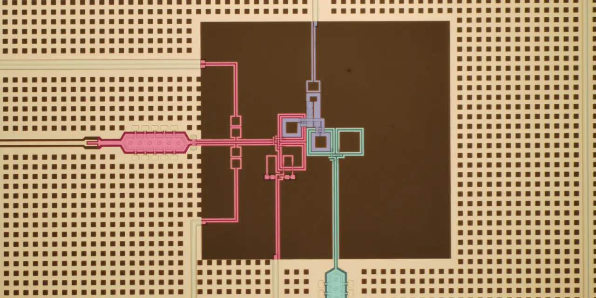

리게티 컴퓨팅을 볼 때 가장 먼저 지워야 할 착각은 “108큐비트가 나왔으니 바로 상용화가 가까워졌다”는 식의 단순한 결론입니다. 리게티가 108큐비트 Cepheus-1-108Q를 공개한 것은 분명 큰 기술 신호입니다. 다만 투자자가 지금 확인해야 할 질문은 큐비트 숫자 자체가 아니라, 그 시스템이 얼마나 자주 쓰이고, 고객이 반복해서 비용을 지불하며, Novera QPU 같은 현장 설치형 제품이 연구기관 납품을 넘어 안정적인 매출 구조로 이어지는가입니다.
리게티는 아이온큐와 다른 길을 걷습니다. 아이온큐가 이온 트랩 방식과 네트워크 확장을 강조한다면, 리게티는 초전도 큐비트, 자체 Fab-1 제조, 칩렛 기반 확장을 이야기합니다. 이 차이는 단순한 기술 취향이 아닙니다. 초전도 방식은 빠른 게이트 속도와 반도체 제조 경험을 활용할 수 있다는 장점이 있지만, 오류율, 냉각, 제어 전자장비, 칩 간 연결, 시스템 안정성이라는 무거운 숙제를 같이 안고 갑니다.
리게티의 2026년 1분기 실적 발표를 보면 이 긴장이 선명합니다. 회사는 1분기 매출 440만 달러, 영업손실 약 2,595만 달러, 현금과 매도가능증권을 합친 유동성 약 5억6,900만 달러를 제시했습니다. 현금은 넉넉하지만 사업 규모는 아직 작고, 기술 로드맵을 밀어붙이기 위한 비용은 계속 큽니다. 그래서 리게티 주주에게 필요한 질문은 “양자컴퓨터가 미래인가”가 아니라 “리게티가 그 미래까지 현금을 버티며 고객 사용량을 쌓을 수 있는가”입니다.
108큐비트는 출시보다 가동률이 중요합니다

리게티는 Cepheus-1-108Q를 일반 고객과 파트너가 사용할 수 있게 했다고 발표했습니다. 접근 경로는 Rigetti QCS, Amazon Braket, Microsoft Azure Quantum, qBraid입니다. 이 발표에서 눈에 띄는 부분은 108이라는 숫자뿐 아니라, 열두 개의 9큐비트 칩렛을 연결한 모듈형 구조라는 점입니다. 리게티가 장기적으로 말하는 확장성은 바로 이 칩렛 구조가 더 큰 시스템에서도 안정적으로 작동한다는 전제 위에 서 있습니다.
하지만 투자자가 볼 첫 번째 숫자는 큐비트 수가 아니라 가동률과 고객 사용량입니다. 클라우드에 올라갔다는 사실은 고객이 접속할 수 있다는 뜻이지, 고객이 의미 있는 비용을 계속 지불한다는 뜻은 아닙니다. 연구자와 기업 고객이 실제 회로를 얼마나 돌리고, 오류율 때문에 어떤 계산을 포기하며, 사용량이 분기 매출로 얼마나 반영되는지 확인해야 합니다. 양자컴퓨팅에서는 “사용 가능”과 “상업적으로 쓸 만함” 사이의 간격이 매우 큽니다.
리게티가 밝힌 108큐비트 시스템의 기술 지표도 같은 방식으로 읽어야 합니다. 회사는 99.1% 수준의 중앙값 2큐비트 게이트 충실도, 약 60나노초 게이트 속도, 99.9% 중앙값 단일 게이트 충실도를 제시했습니다. 속도는 초전도 방식의 매력입니다. 그러나 실제 고객은 속도 하나로 결정을 내리지 않습니다. 더 깊은 회로를 돌릴 수 있는지, 결과가 반복 가능한지, 클라우드 대기시간과 시스템 안정성이 괜찮은지, 문제 풀이 비용이 납득 가능한지가 함께 중요합니다.
Novera QPU는 작은 판매가 아니라 반복성 시험대입니다
관련 영상
리게티 컴퓨팅의 기술 한계와 도약 가능성을 설명하는 한국어 롱폼 영상
리게티의 투자 포인트에서 Novera QPU는 생각보다 중요합니다. 108큐비트 클라우드 시스템이 회사의 큰 깃발이라면, Novera는 고객 현장에 들어가는 실물 장비입니다. 회사는 2026년 1분기에 서스캐처원대학교에 9큐비트 Novera QPU 판매와 출하를 완료했다고 밝혔고, 연구기관과 양자컴퓨팅 센터가 직접 하드웨어를 다루려는 수요를 언급했습니다. 매출 규모가 아주 크지 않아도, 반복 판매가 확인되면 리게티의 사업 모델은 훨씬 설득력을 얻습니다.
Novera가 중요한 이유는 고객의 구매 의도가 클라우드 사용량보다 더 선명하게 드러나기 때문입니다. 클라우드는 사용해보고 그만둘 수 있지만, 현장 설치형 QPU는 예산, 연구 계획, 냉각·제어 인프라, 유지보수 인력이 모두 필요합니다. 고객이 그런 결정을 내린다는 것은 단순 호기심보다 더 긴 연구 계획이 있다는 뜻입니다. 리게티가 대학과 연구기관에서 반복 납품을 만들 수 있다면, 작은 장비 매출은 장기 고객 관계의 출발점이 될 수 있습니다.
다만 이 장비 판매가 자동으로 높은 마진을 보장하지는 않습니다. 초기 양자 하드웨어는 고객 맞춤 지원이 많이 들어가고, 출하 후에도 설치와 실험 환경 안정화에 시간이 걸립니다. 리게티의 영업손실이 큰 상황에서는 장비가 팔릴수록 비용 부담도 같이 따라올 수 있습니다. 그래서 투자자는 Novera 판매 건수뿐 아니라 매출총이익, 설치 일정, 고객 재구매, 후속 서비스 매출을 같이 봐야 합니다.
현금 5억6,900만 달러가 사라지는 속도
리게티는 2026년 1분기 말 기준 현금, 현금성 자산, 단기·장기 매도가능증권을 합쳐 약 5억6,900만 달러의 유동성을 가지고 있습니다. 이 숫자는 분명 강한 방어막입니다. 양자컴퓨팅 회사는 아직 수익성이 낮고 연구개발비가 큰 산업에 속하기 때문에, 현금이 부족하면 기술 로드맵보다 자금조달 뉴스가 먼저 주가를 흔듭니다. 리게티는 적어도 단기 생존 압박에서 한 걸음 떨어져 있습니다.
문제는 현금이 많다는 사실과 사업이 자체적으로 돈을 번다는 사실이 다르다는 점입니다. 2026년 1분기 매출 440만 달러에 비해 영업손실은 약 2,595만 달러였습니다. 연구개발비와 판매관리비가 계속 필요하고, 더 큰 칩렛 기반 시스템과 영국 내 1,000큐비트 초과 시스템 구상으로 가려면 공정, 설계, 제어 장비, 냉각 인프라, 고객 지원에 계속 돈이 들어갑니다. 현금 보유액은 시간을 벌어주지만, 시간을 가치로 바꾸는 것은 고객 매출입니다.
리게티의 순이익 숫자도 조심해서 봐야 합니다. 2026년 1분기에는 공정가치 변동과 같은 비영업 요인이 실적에 영향을 줬습니다. 그래서 손익계산서에서 순이익만 보고 “흑자 전환”으로 받아들이면 실제 영업 상황을 놓칠 수 있습니다. 이 회사의 본질은 아직 영업손실을 감수하며 기술과 고객 기반을 키우는 단계입니다. 투자자는 순이익보다 매출 성장, 매출총이익, 영업손실, 현금 감소 속도, 고객 납품을 더 우선해야 합니다.
리게티 주주가 다음 분기에 볼 숫자
첫 번째 확인 포인트는 클라우드 접근성이 매출로 바뀌는 속도입니다. Cepheus-1-108Q가 Amazon Braket과 Azure Quantum 같은 플랫폼에 올라가면 고객 접점은 넓어집니다. 그러나 넓은 접점이 곧 높은 사용량을 뜻하지는 않습니다. 다음 실적에서 클라우드 관련 매출, 고객 수, 사용량을 분리해 볼 수 있다면 리게티의 상업화 속도를 판단하는 데 큰 도움이 됩니다.
두 번째는 Novera QPU 반복 판매입니다. 대학 한 곳, 연구기관 한 곳에 납품하는 것과 여러 지역의 연구센터가 계속 구매하는 것은 완전히 다른 이야기입니다. 리게티가 온프레미스 양자 시스템을 팔 수 있다면 클라우드 사용료와 다른 성격의 하드웨어 매출이 생깁니다. 다만 장비 판매는 출하 시점에 매출이 몰릴 수 있으므로, 분기별 변동성을 감안해야 합니다.
세 번째는 기술 로드맵의 현실성입니다. 회사는 영국에 최대 1억 달러를 투자해 향후 3~4년 안에 1,000큐비트 초과 시스템을 배치하겠다는 구상을 밝혔습니다. 이 목표가 의미 있으려면 단순히 더 많은 큐비트를 연결하는 데서 끝나면 안 됩니다. 충실도, 오류율, 회로 깊이, 고객이 실제로 돌릴 수 있는 문제의 크기가 함께 개선되어야 합니다. 주주는 로드맵 발표보다 중간 마일스톤이 실험실 밖에서 검증되는지를 봐야 합니다.
네 번째는 경쟁사와의 상대 위치입니다. 아이온큐는 RPO와 대형 시스템 판매, 디 웨이브는 예약과 기업 고객, 퀀텀 컴퓨팅은 포토닉스 제조와 현금 보유를 강조합니다. 리게티는 초전도 방식, 자체 제조, 클라우드와 온프레미스 장비라는 조합으로 승부합니다. 이 조합이 강점이 되려면 빠른 게이트 속도와 칩렛 확장이 고객 문제를 더 싸고 안정적으로 풀어준다는 증거가 필요합니다.
리게티 컴퓨팅은 양자컴퓨팅 테마 안에서 기대와 의심이 가장 강하게 부딪히는 종목 중 하나입니다. 108큐비트 시스템은 분명 주목할 만하지만, 주주가 기다릴 답은 더 실무적입니다. 고객이 실제로 접속하고, 장비가 반복 납품되고, 현금 소진 속도가 통제되며, 기술 로드맵이 분기마다 확인 가능한 지표로 내려와야 합니다. 그때 리게티의 이야기는 “큐비트가 많다”에서 “고객이 돈을 내는 초전도 양자 플랫폼”으로 바뀔 수 있습니다.